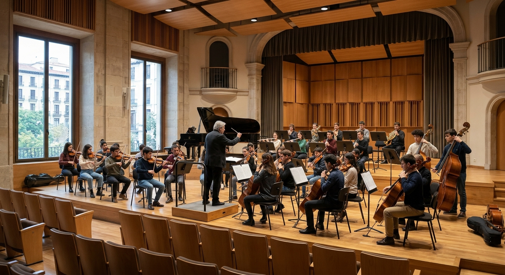

Apertura del nuevo Conservatorio

Normas Básicas del Conservatorio
- Puntualidad: Llega a tiempo a tus clases, ensayos y conciertos.
- Silencio: Mantén la calma en los pasillos para no interrumpir el estudio de los demás.
- Móviles: Dispositivos apagados o en silencio durante las clases y ensayos.
- Cuidado del material: Trata con respeto los pianos, atriles e instrumentos del centro.
- Comida y bebida: Prohibido comer y beber (excepto agua) en aulas y auditorios.
- Orden: Deja el aula limpia y coloca el mobiliario en su sitio al terminar.
- Cabinas de estudio: Respeta los turnos y horarios asignados para practicar.
- Asistencia: Justifica siempre las faltas en clases, orquesta o coro.